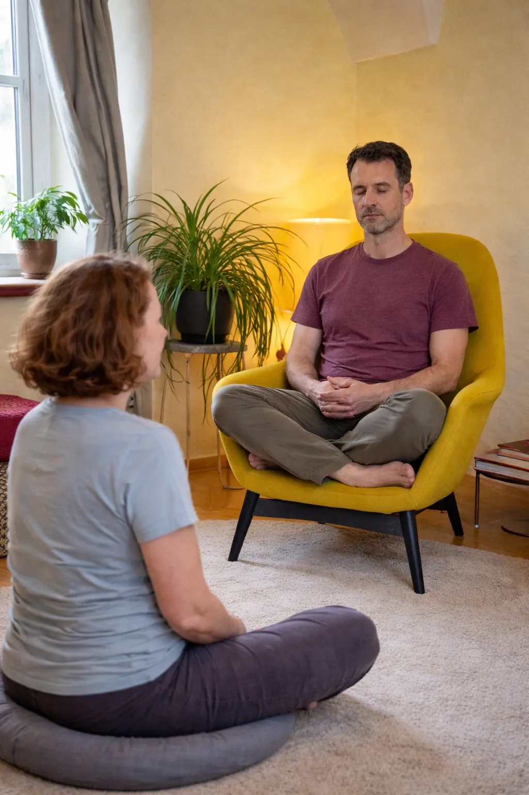

In der modernen Esoterik hält sich hartnäckig ein Gedanke: Deine Seele will immer nur das Beste für dich. Folgst du deinem Seelenweg, öffnen sich die Türen, die Menschen kommen, alles fügt sich. Meine Erfahrung ist eine andere. Die Seele wählt oft die schwierigsten Wege. Denn dort liegt das meiste Lernen.
Livesendung vom Sonntag, 27. September 2026, 10 Uhr
Aus dieser Sendung ist der Artikel entstanden.
Zwei Seelenwege aus meinem Leben
Nehmen wir die Schweigemeditation. Dass ich mich mit ihr auseinandersetze, war eindeutig ein Seelenweg. Leicht gefallen ist sie mir nie. Ich bin ein hyperaktiver Mensch, und bis heute gibt es Tage, an denen ich meine zwanzig Minuten nicht schaffe. Ich habe in unterschiedlichen Traditionen geübt, bin immer wieder gescheitert und habe gerade deshalb viele verschiedene Zugänge kennengelernt. Das ist heute meine Stärke, wenn ich Meditation erkläre. Anstatt auf einer Technik – der richtigen! – zu beharren, biete ich Alternativen an. Ich versuche, die Meditation an die moderne Welt anzupassen.

Oder die Energetik. Dreimal in meinem Leben bin ich zu ihr als Beruf zurückgekommen – und jedes Mal ohne Erfolg. Die praktische Arbeit hat in mir nie eine Resonanz ausgelöst. Es war immer ein Schwimmen gegen den Strom. Erst im letzten Jahr ist mir klar geworden, woran das liegt: Ich bin Theoretikerin. Meine Resonanz liegt im Nachdenken, im Einordnen, in der Frage: Was passiert da eigentlich?
Seelenwege haben mir tiefes Wissen geschenkt. Es bleibt nicht an der Oberfläche und begleitet mich, davon bin ich überzeugt, über dieses Leben hinaus. Doch sie haben mich auch Energie gekostet, Gesundheit, Jahre. Ich bin immer wieder krank geworden, zeitweise konnte ich buchstäblich nicht mehr gehen. Und Erfolg im äußeren Sinn hatte ich keinen.
Was ist ein Resonanzweg?
Ein Resonanzweg ist da ganz anders. Es kommt nicht unbedingt Geld, nicht unbedingt Kunden, nicht unbedingt messbarer Erfolg. Aber ein Ja von der Welt, das nicht nur aus deinem Inneren kommt. Menschen, die wie aus dem Nichts auftauchen und sagen: Das ist ein guter Weg, bleib dran.
Mein erster bewusster Resonanzweg ist Sinnfunk. Die Idee kam mir an einem Abend im Bett. Eine Bekannte hatte vorgeschlagen, gemeinsam einen Podcast zu starten, und ich lag wach und dachte: Ich möchte nicht den hundertsten Podcast beginnen, in dem zwei Frauen miteinander reden. In einer Welt des Überangebots muss man sich gelegentlich eine Alternative ausdenken. Da kamen zwei Erinnerungen zusammen: die amerikanischen Talkradios, in denen stundenlang nur gesprochen wird, und ein Psychologe, der auf YouTube Höreranrufe annimmt und sich für jedes Problem Zeit nimmt. Warum also nicht ein Webradio? Eines, bei dem keine Algorithmen regieren. Was gesendet wird, wird gesendet.

Nüchtern betrachtet ist das eine schwachsinnige Idee. Webradios kennt im deutschsprachigen Raum kaum jemand. Ich habe zwischen zehn und fünfzig Hörern am Tag, verteilt über viele Stunden, und die meisten bleiben nicht lange. Werbekunden gibt es keine. Alle objektiven Messwerte sagen: Lass das sein.
Und trotzdem fließt es. Seit ich aufgehört habe, jede Woche zehn oder zwanzig Menschen kalt anzurufen, und nur noch mit Mitwirkenden arbeite, bei denen die Resonanz stimmt, brauche ich erstaunlich wenig Energie für das Radio. Wenn jemand nach einem Gespräch sagt: „Genau so eine Plattform habe ich gesucht“, dann läuft die Zusammenarbeit plötzlich leicht und frei. Selbst die vielen Absagen am Telefon kommen oft mit dem Nebensatz: „Das ist eine richtig gute Idee.“ Auch das ist Resonanz.
Team Resonanzweg, vorerst
Ich will Seelenwege nicht schlechtreden. Sie bringen eine Tiefe hervor, die ein leichter Weg selten erzeugt. Doch man kann nur eine bestimmte Zeit gegen den Strom schwimmen, bevor man energetisch und oft auch körperlich leer ist. Mit 46 habe ich deshalb beschlossen, bei allem, was ich tue, zuerst eine Frage zu stellen:
„Gibt es eine Resonanz? Fließt es?“
Natürlich kann es sein, dass auch Sinnfunk keinen Erfolg bringt. Aber dann bin ich am Ende wenigstens nicht ausgebrannt.
Selbstverständlich kann ich mich irren. Ich bin ja erst in den ersten Tagen meines ersten Resonanzwegs. Vielleicht sitze ich in einem Jahr vor dem Mikrofon und sage: „Meide die Resonanzwege, sie sind noch schlimmer als die Seelenwege!“ Zurzeit bin ich jedoch eindeutig Team Resonanzweg.
Gehst du gerade einen Weg, der dich wachsen lässt, oder einen, der dich trägt?